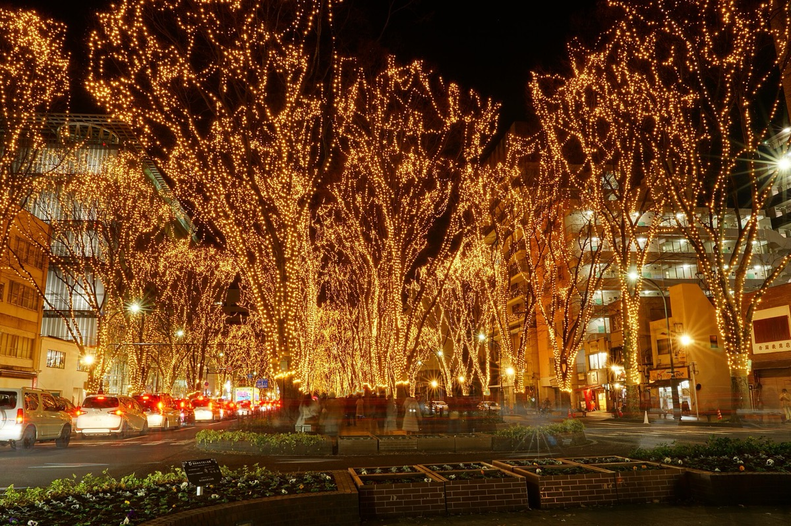
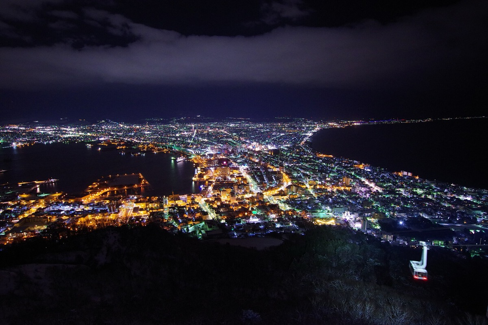
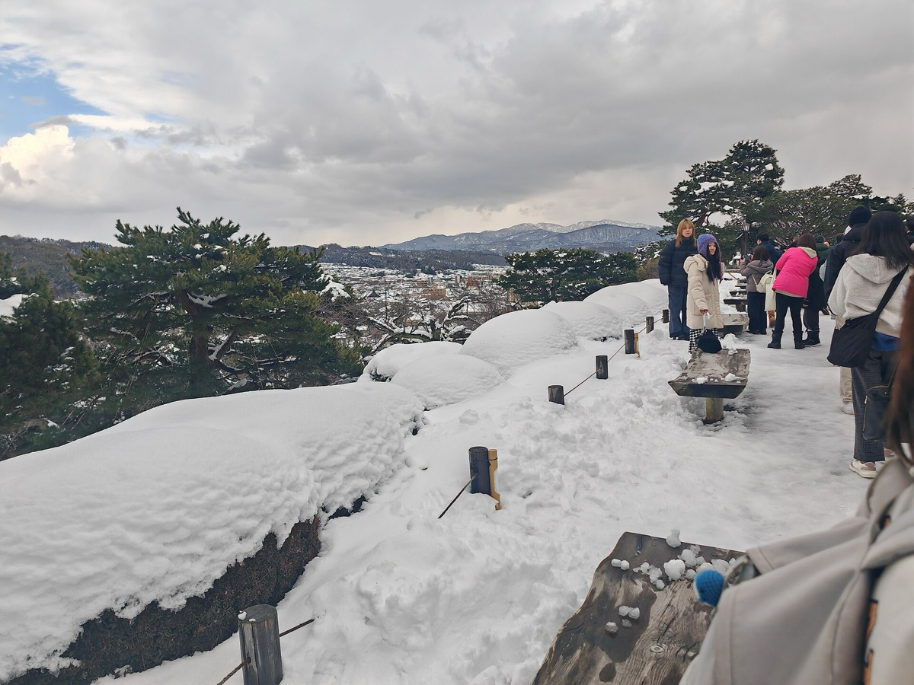
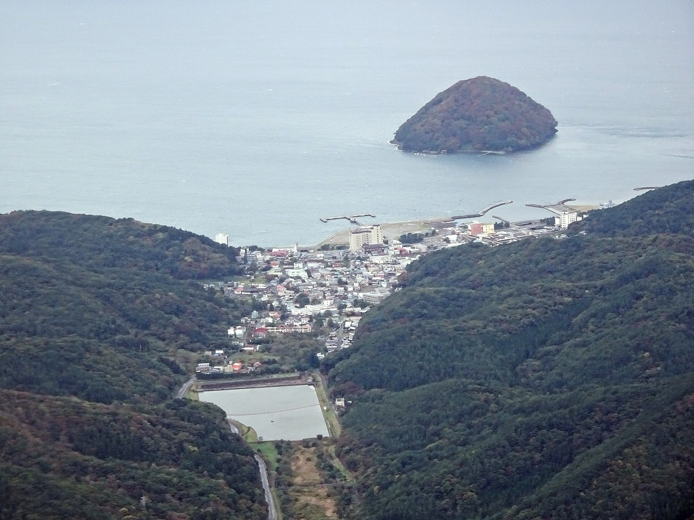
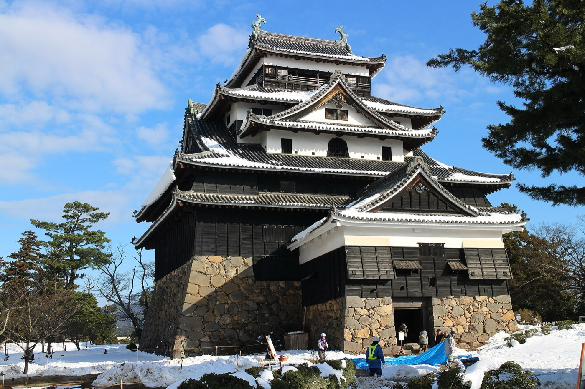

센다이와 아키우온천SENDAI · AKIU ONSEN
균형형
도호쿠 최대 도시 옆에 천 년 된 온천. 여섯 축을 가장 고르게 만족한다.
- 대표 관광지
- 마츠시마(일본 3경) · 즈이간지 · 즈이호덴
- 대표 음식
- 굴(12~3월) · 규탄 · 센다이규
- 이동
- 공항철도 25분 · 마츠시마 40분 · 아키우 50분
- 총 비용
- 1인 약 72~106만원
얻는다도시·바다·온천이 다 있고 모든 구간이 한 시간 안이다.
포기눈. 도호쿠지만 적설이 적어 설경은 기대치를 낮춰야 한다.

하코다테와 유노카와온천HAKODATE · YUNOKAWA ONSEN
최소 이동형
공항에서 온천까지 버스 6분. 이동이 가장 짧고 겨울 해산물이 가장 세다.
- 대표 관광지
- 하코다테산 야경 · 아침시장 · 모토마치 · 붉은벽돌 창고
- 대표 음식
- 해산물덮밥 · 오징어회 · 대게 · 시오라멘
- 이동
- 공항→온천 버스 6분 · 시내 전차 30분
- 총 비용
- 1인 약 76~117만원
얻는다짐을 한 번만 옮기고 온천에 3박. 눈도 확실히 온다.
포기도시 규모는 센다이·가나자와보다 작다.

가나자와와 유와쿠온천KANAZAWA · YUWAKU ONSEN
도시 품격형
눈 덮인 겐로쿠엔과 겨울 대게. 도시의 격이 가장 높다.
- 대표 관광지
- 겐로쿠엔(일본 3대 정원) · 히가시차야가이 · 21세기미술관
- 대표 음식
- 즈와이가니(대게) · 노도구로 · 가나자와 오뎅
- 이동
- 공항→시내 리무진 40분 · 유와쿠 25분
- 총 비용
- 1인 약 87~131만원
얻는다설경·도시·대게가 한 곳에. 온천도 시내에서 25분이다.
포기겐로쿠엔·차야가이는 관광객이 많다. 비용도 가장 높다.

아오모리와 아사무시온천AOMORI · ASAMUSHI ONSEN
설국형
눈이 가장 확실하고 겨울 해산물이 가장 세다. 그런데 조용하다.
- 대표 관광지
- 네부타 박물관 · A-FACTORY · (선택) 핫코다 수빙
- 대표 음식
- 노케동 · 오마 참치 · 겨울 대게 · 사과
- 이동
- 공항→시내 35분 · 아사무시온천 철도 20분
- 총 비용
- 1인 약 73~114만원
얻는다설국의 겨울과 해산물, 그러면서 붐비지 않는다. 실내 볼거리도 많다.
포기폭설로 열차·항공이 지연될 수 있다. 도시 규모는 작다.

요나고와 마쓰에, 가이케온천YONAGO · MATSUE · KAIKE ONSEN
산인 미식형
공항에서 온천까지 택시 20분. 겨울 대게의 본고장에 눈 쌓인 국보 천수각.
- 대표 관광지
- 마쓰에성(국보) · 호리카와 고타쓰 배 · 아다치미술관(일본 정원 1위) · 신지호 석양
- 대표 음식
- 마쓰바가니(대게) · 이즈모 소바 · 시지미 조개국 · 노도구로
- 이동
- 공항→가이케 택시 20분 · 요나고→마쓰에 JR 30분
- 총 비용
- 1인 약 89~138만원
얻는다한국인이 드문 조용한 온천과 대게. 전 객실 노천탕 료칸에 성곽도시까지 붙는다.
포기도시가 작다. 직항이 하루 한 편이라 좌석이 빨리 찬다. 카이 이즈모를 넣으면 비용이 높다.